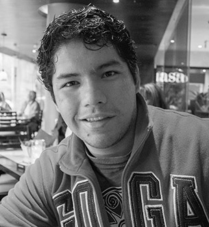

Adán Miguel Sánchez Albert
Web Developer


- 3 de noviembre de 1988
- Coyoacán, México D.F.
- dual.3nigma@gmail.com
- tel: (55) 53-363091
- cel: (22) 81-548867
Perfil profesional
Desarrollador Web con más de 5 años de experiencia profesional.
Durante los últimos años me he enfocado al desarrollo de plataformas para la educación, utilizando tecnologías modernas, robustas y escalabes. También me he encargado de la instalación y mantenimiento de servidores.
Mi portafolio incluye aplicaciones web desarrolladas para clientes como SistemaUNO-Santillana y ASIC.
Habilidades
Software
Desarrollo
- Python
- Django
- Tornado
- Web2Py
- PHP
- Wordpress
- Joomla!
- Magento
- Laravel
- Javascript
- jQuery
- Mootools
- Ext.JS
- Sencha Touch
- Backbone.JS
- C++
- Objective-C
- Java
Experiencia Laboral
Marzo 2012 - Julio 2013
Back End Developer
Mejorando.la INC, mejorando.la, Colombia
Noviembre 2009 - Febrero 2012
Front End Developer
HábitatWeb, habitatweb.mx, México
- Desarrollo de cuentos audiovisuales para iPad compatibles con navegadores WebKit para SistemaUNO-Santillana: ejemplo.
- Desarrollo de sitio autoadministrable de recursos educativos para iPad para SistemaUNO-Santillana: www.sistemaunoipad.com; usando tecnologías como Python/Django y Amazon Web Services (EC2, S3).
- Mútiples desarrollos sobre Wordpress, Magento, Joomla y PHP en general, ejemplos: www.vozenpunto.com, sitioscompactos.com, www.asicingenieria.mx.
Formación
Universidad Veracruzana
Xalapa, Ver.
2005-2009
Bachilleres de Veracruz
Veracruz, Ver.
Referencias
Rodrigo Mejía Armijo
Director de HábitatWeb
atencion@habitatweb.com.mx
(22) 88-169379
Christian Van Der Henst
CEO de Mejorando.la
c@mejorando.la
+1-415-894-0755
John Freddy Vega
CEO de Mejorando.la
f@mejorando.la
+57 316 5695161